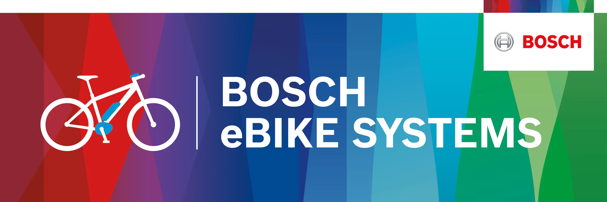

Verkauf von Fahrrädern
Beratung und Auswahl passender Fahrräder – abgestimmt auf Einsatzbereich, Fahrstil und individuelle Anforderungen.
Radologe
Radsport & Werkstatt in Stuttgart
Wir bieten dir individuelle Lösungen für dein Fahrrad – abgestimmt auf Technik, Einsatzbereich und persönliche Anforderungen. Vom Alltagsrad über Rennrad und Mountainbike bis zum E-Bike.
Jede Leistung beginnt mit einem genauen Blick auf dein Rad und auf das, was du wirklich brauchst.
Beratung und Auswahl passender Fahrräder – abgestimmt auf Einsatzbereich, Fahrstil und individuelle Anforderungen.
Wartung, Inspektion und Reparatur für Fahrräder und E-Bikes – zuverlässig, fachgerecht und abgestimmt auf dein Rad.
Optimierung, Feineinstellung und Service für sportliche Räder mit Fokus auf Effizienz, Funktion und Fahrgefühl.
Zuverlässiger Service für Gelände, Tour und täglichen Einsatz – passend zu deinem Fahrstil und Einsatzzweck.
Unser Service richtet sich an unterschiedliche Fahrradtypen und Anforderungen.
Für sportlich orientierte Fahrer, die Wert auf präzises Setup, Funktion und saubere Abstimmung legen.
Service und Beratung für moderne E-Bikes – abgestimmt auf Technik, Nutzung und Anforderungen im Alltag oder auf Tour.
Zuverlässiger Service für Gelände, Tour und anspruchsvolle Einsätze – robust, durchdacht und funktional.
Wartung und Reparatur für Räder, die regelmäßig genutzt werden und im Alltag zuverlässig funktionieren müssen.
Nicht jedes Problem wird mit derselben Maßnahme gelöst. Genau hier liegt der Unterschied.
Wir schauen nicht nur auf den Defekt, sondern auf das gesamte Fahrrad und den Menschen, der es fährt. Daraus entsteht eine Empfehlung, die technisch sinnvoll ist und wirklich zu deinem Einsatzbereich passt – ob Rennrad, Alltagsrad, Mountainbike oder E-Bike.
Ob Reparatur, Wartung oder Optimierung – persönliche Beratung ist bei uns kein Zusatz, sondern der zentrale Teil unserer Arbeit.
Wir arbeiten mit bewährten Herstellern und Systemen im Bereich E-Bike und Fahrradtechnik.

Service und Betreuung für moderne E-Bike-Systeme.
Komponenten für Schaltung, Antrieb und Bremsen.
Melde dich bei uns und lass dich persönlich beraten. Gemeinsam finden wir die passende Lösung für dein Rad und deinen Einsatzzweck.
Jetzt Kontakt aufnehmen